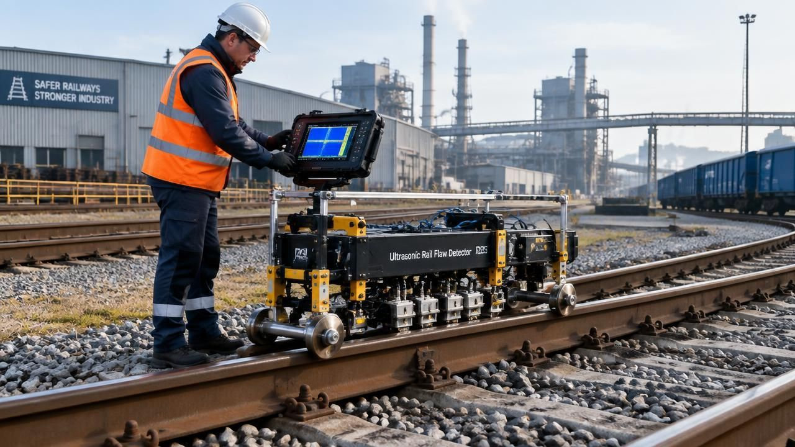
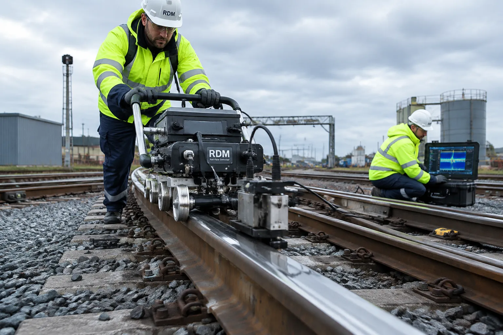
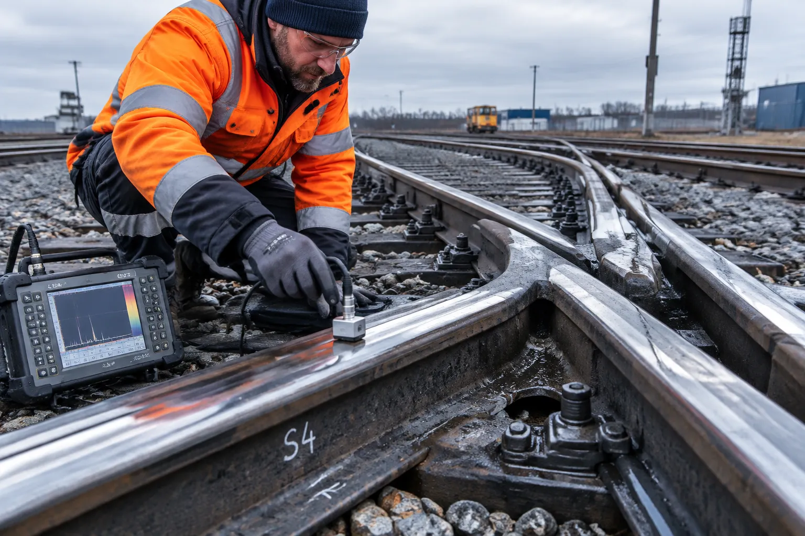
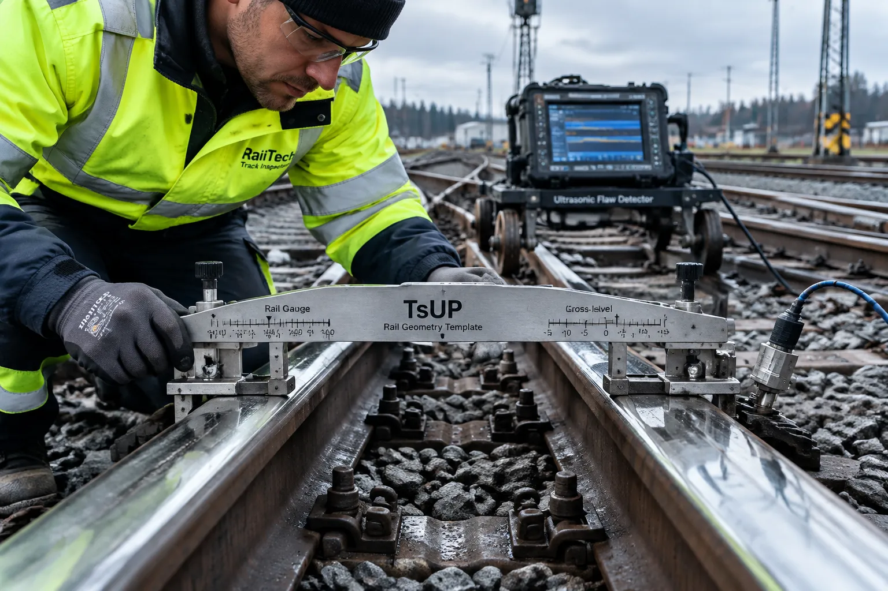
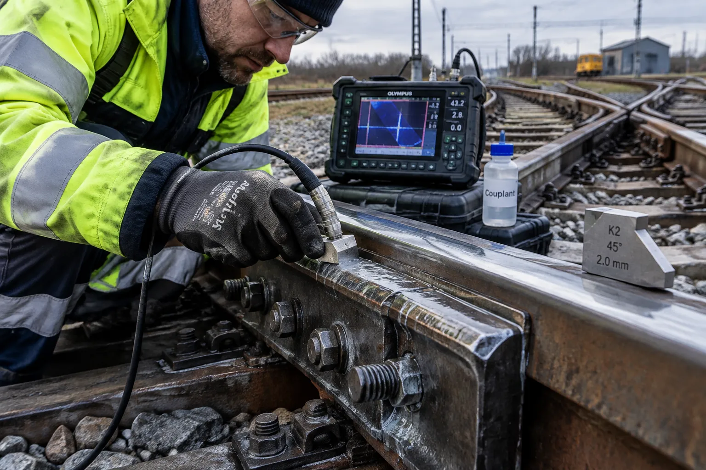
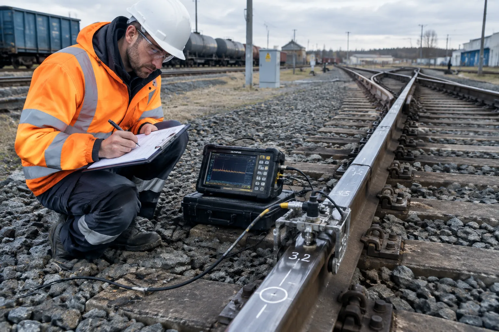
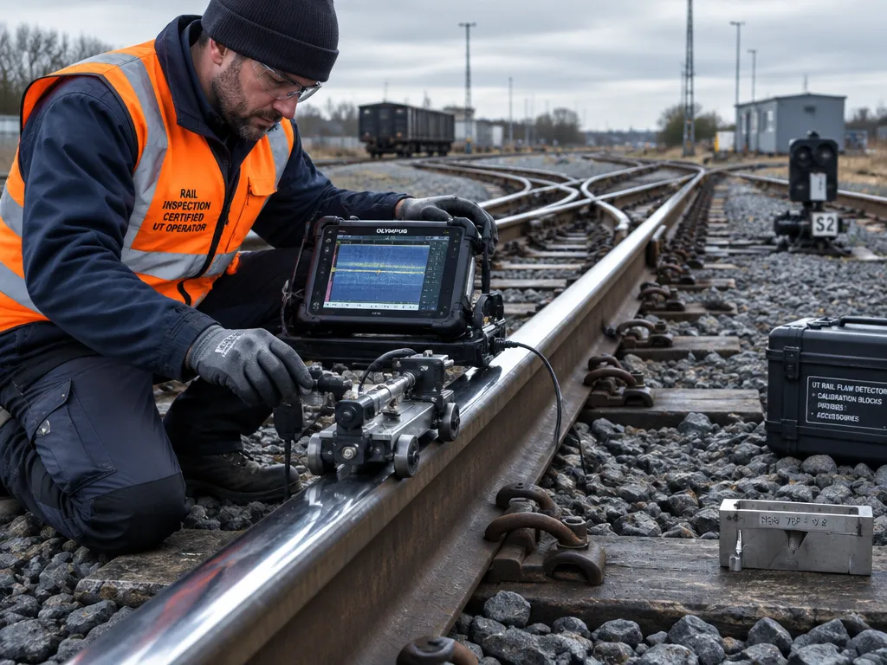
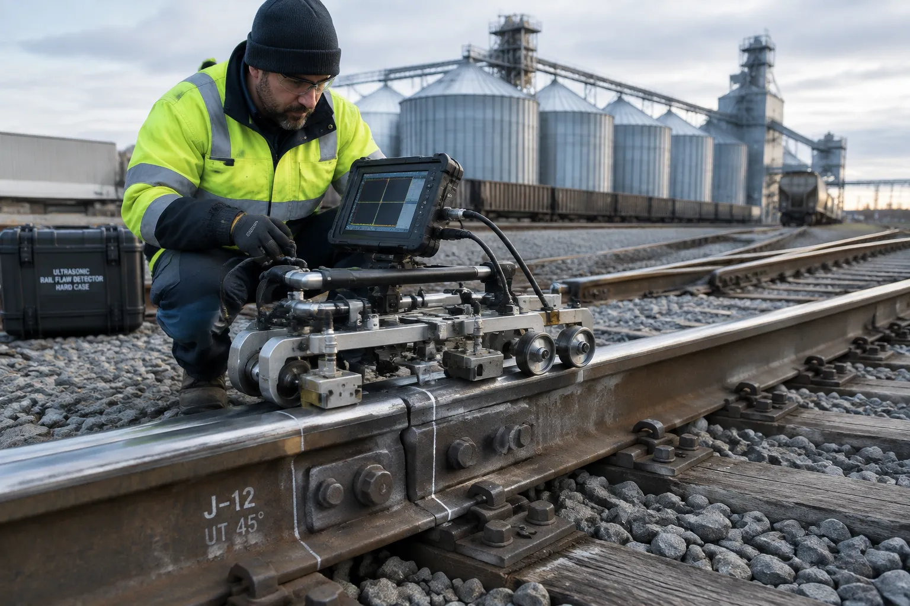
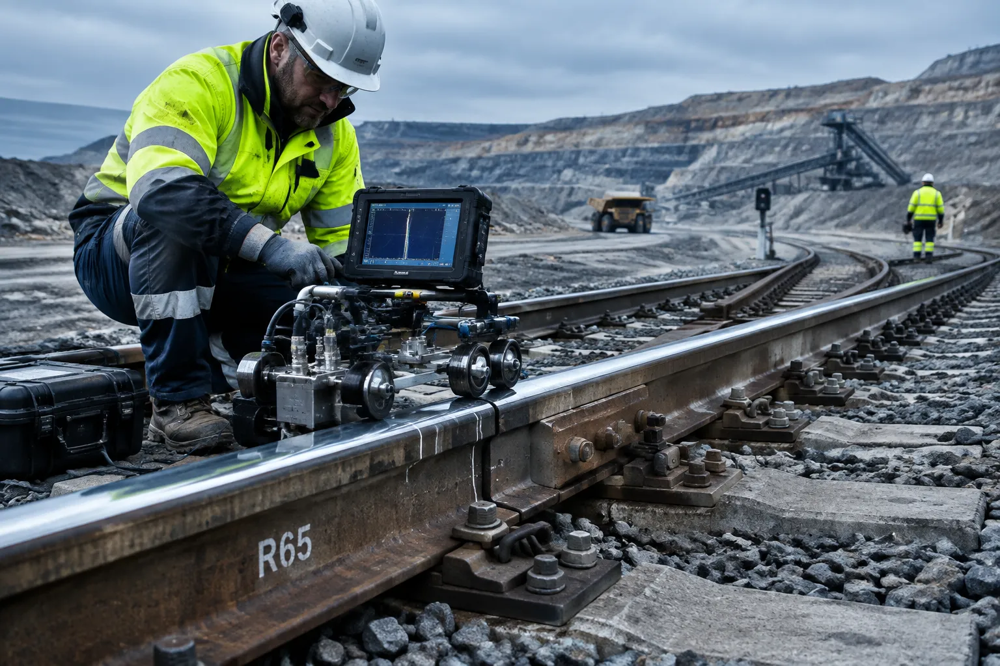
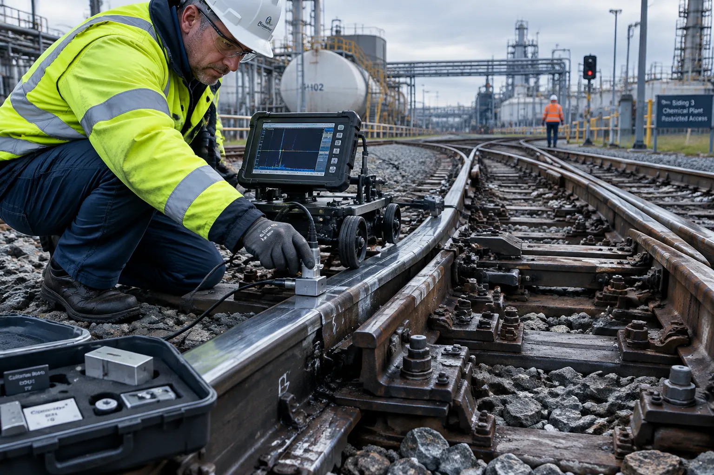

Аттестованная лаборатория неразрушающего контроля
Дефектоскописты имеют квалификационные удостоверения II уровня по ультразвуковому методу.

Проводим сплошной ультразвуковой контроль рельсов и стрелочных переводов любой длины в Южном Федеральном округе РФ. Дефектоскопия проводится на основании регламентирующих документов. Выдаем официальные заключения.
Обследуем железнодорожные пути необщего пользования мобильными дефектоскопами. Находим внутренние трещины металла, износ элементов стрелок и отклонения колеи по уровню.

Ищем внутренние усталостные трещины головки и шейки рельсов дефектоскопами типа РДМ.

Проверяем рамные рельсы, остряки, крестовины и контррельсы на скрытые дефекты металла.

Измеряем ширину колеи и взаимное положение рельсовых нитей по уровню и шаблону ЦУП.

Выявляем трещины в зоне болтовых отверстий и стыков ручными наклонными преобразователями.

Составляем акты осмотра пути с точной привязкой обнаруженных дефектов к пикетам.
Дефектоскопия рельсовых железнодорожных путей необщего пользования проводится на основании документов, регламентирующих дефектоскопию рельсов. Заключения нашей лаборатории имеют юридическую силу для страховых компаний и надзорных органов.
Дефектоскописты имеют квалификационные удостоверения II уровня по ультразвуковому методу.
Приборы ежегодно проходят метрологическую поверку и внесены в государственный реестр средств измерений.
Выдаем акты осмотра и экспертные заключения установленной формы.
Высылаем свидетельство об аттестации лаборатории и сертификаты поверок дефектоскопов перед подписанием договора.
Сдаем итоговый отчет в срок до 10 рабочих дней. Работаем в технологические окна между подачами вагонов, поэтому предприятие не останавливает маневровую работу.

Изучаем расписание подачи и уборки вагонов, чтобы дефектоскописты работали только в технологические перерывы.
Проходим пути с мобильными дефектоскопами и путевыми шаблонами, фиксируя каждый метр колеи.
Наносим масляную путейскую разметку на остродефектные рельсы и сразу передаем данные начальнику службы пути.
Фиксируем дефекты с точной привязкой к пикетам и подписываем официальный акт.
Диагностируем ветки с высокими осевыми нагрузками и жесткими требованиями промышленной безопасности.

Провели сплошной контроль перед массовой подачей зерновозов. Обнаружили 2 критические трещины в шейке рельсов и предотвратили аварийный сход вагонов.

Выполнили дефектоскопию рельсов Р65 под постоянной нагрузкой тяжелых составов с рудой. Нашли 14 дефектов стыков и составили план первоочередного ремонта.

Проверили пути под транспортировку опасных химических грузов. Служба пути заказчика приняла отчетные документы без единого замечания.
Оценки технических руководителей, отвечающих за безопасность движения на ведомственных путях.
«В июле готовили подъездные пути к плановой проверке. ЮгПуть прислал свидетельства лаборатории и поверки дефектоскопов в день звонка, поэтому служба безопасности согласовала допуск за два часа. Пути проверили за четыре смены, акт комиссия приняла сразу.»
«Для нас важно не останавливать отгрузку: на пути каждые два часа заходят маневровые тепловозы. Специалисты ЮгПути работали строго в окна между подачами. На шестой день отчитались по каждому пикету и показали остряк стрелочного перевода с выкрошенным металлом.»
«Проверяли 12 километров путей после зимы. Уложились ровно в регламент — через 7 дней передали подробный отчет по каждому участку. Точная привязка дефектов к пикетам помогла нашей путевой бригаде заменить дефектные накладки без долгих поисков на путях.»
Нормативная база дефектоскопии железнодорожных путей необщего пользования.
Дефектоскопия железнодорожных рельсов крайне важна при обследовании как линейных участков железной дороги, так и стрелочных переводов. Также необходима дефектоскопия для старогодных рельсов, которые чаще всего используются для укладки и замены на путях предприятий.
Ультразвуковая дефектоскопия позволяет отбраковать дефектные рельсы, а дефектоскопия стрелочного перевода поможет подобрать по-настоящему качественный (в том числе старогодный) рельс ещё до укладки в путь, экономя ресурсы предприятия.
Также периодическая дефектоскопия рельсов, уложенных в железнодорожных путях необщего пользования, позволяет выявить основные дефекты рельсов в начальной стадии развития для предупреждения изломов рельсов пути, приводящих, как правило, к значительным потерям ресурсов и времени на восстановление исправности пути и подвижного состава.
Для контроля за состоянием железнодорожного пути и сооружений инфраструктуры применяются путеизмерительные вагоны и тележки, вагоны-дефектоскопы, дефектоскопные автомотрисы, дефектоскопные тележки, лаборатории по дефектоскопии.
Проведение дефектоскопии железнодорожных путей обязательно на всех железнодорожных путях в соответствии с требованиями Правил технической эксплуатации железных дорог РФ (Приказ Министерства транспорта от 23.06.2022 № 250).
В соответствии с «Правилами технической эксплуатации железных дорог РФ» рельсы и стрелочные переводы на главных и приёмоотправочных железнодорожных путях должны проверяться (диагностироваться) с использованием вагонов-дефектоскопов, дефектоскопными тележками по графику, утверждённому соответственно владельцем инфраструктуры или владельцем железнодорожного пути необщего пользования.
Ультразвуковую дефектоскопию рельсов железнодорожных путей необщего пользования имеют право проводить только лаборатории неразрушающего контроля, аттестованные в системе Ростехнадзора России в соответствии с ПБ 03-372-00 «Правила аттестации и основные требования к лабораториям неразрушающего контроля». Требования к подготовке и сертификации персонала лаборатории изложены в ПБ-03-440-02 «Правила аттестации персонала в области неразрушающего контроля».
Для специалистов лаборатории (дефектоскопистов) главным документом, регламентирующим ультразвуковую дефектоскопию рельсовых путей железных дорог, является ГОСТ 18576-96 «Контроль неразрушающий. Рельсы железнодорожные. Методы ультразвуковые», утверждённый 4 июля 2001 года, который сильно отстал от развития средств контроля железнодорожных рельсов.
Для путей общего пользования, принадлежащих ОАО «Российские железные дороги», дефектоскопия регламентирована Распоряжением ОАО «РЖД» от 09.09.2011 № 2036р «Об утверждении и вводе в действие Положения о системе неразрушающего контроля рельсов и эксплуатации средств рельсовой дефектоскопии в путевом хозяйстве железных дорог ОАО „РЖД“», учитывающим основные направления технического и организационного развития системы неразрушающего контроля рельсов и эксплуатации средств рельсовой дефектоскопии в путевом хозяйстве железных дорог ОАО «РЖД» с учётом развития данной отрасли.
| Федеральный закон | Номер | Источник опубликования | Последние изменения |
|---|---|---|---|
| О промышленной безопасности опасных производственных объектов | № 116-ФЗ | Российская газета, N 145, Москва, 1997 | изм. от 01.09.2025 |
| О техническом регулировании | № 184-ФЗ | Российская газета, N 245, Москва, 2002 | изм. от 25.12.2023 |
| Об охране окружающей среды | № 7-ФЗ | Российская газета, N 6, Москва, 2002 | изм. от 26.12.2024 |
| Об экологической экспертизе | № 174-ФЗ | Российская газета, N 232, Москва, 1995 | изм. от 31.07.2025 |
| О независимой оценке квалификации | № 238-ФЗ | www.pravo.gov.ru, 2016 | — |
| Об обеспечении единства измерений | № 102-ФЗ | Российская газета, N 140, 2008 | изм. от 08.08.2024 |
Согласуем дату выезда специалистов в течение двух часов после получения параметров путей.
Что нужно указать в заявке:
Отправим на электронную почту образец отчета по итогам работ и копии свидетельств лаборатории.
Оставьте заявку